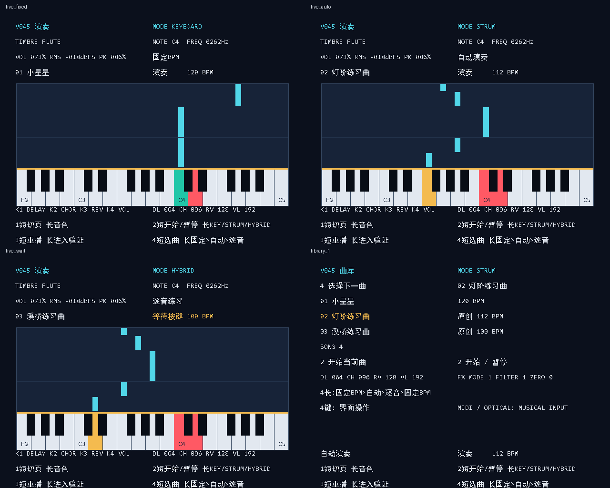

Tang Primer 20K · FPGA + ESP32 · 2026-10-31
FPGA V045 + ESP32 V046均已固化；三模式读回、自动演奏30秒实际PCM录音、下载与CRC校验通过，无掉样。手机页面现场交互、真实正确琴键推进及模拟音频延迟仍需现场验收；离线键盘/显示/协议测试已通过。
用户实测补充：手机 /extensions 已能显示三种演奏模式和三首预置曲目；按钮实际操作、逐音弹键推进与手机端WAV播放下载仍待确认。
ESP32 和 FPGA 之间保留三根通信线。手机通过 Wi-Fi 连接 ESP32；不需要手机数据线，也不需要电脑常开。
| ESP32 实物丝印 | FPGA 接点 | 用途 |
|---|---|---|
| D17 / GPIO17 | PMOD3 L9 | ESP32 TX → FPGA RX |
| D16 / GPIO16 | PMOD3 N8 | ESP32 RX ← FPGA TX |
| GND | GND | 公共参考地 |
ESP32 使用自己的 USB 供电；两块板的 3V3 输出不要并联。已经迁移的 ADS 和 I²S 引脚继续使用：ADS SCL=N9、SDA=N7；PCM BCK=B12、LRCK=C12、DIN=B13。
fpga2026。能打开网页只说明手机连到了 ESP32。FPGA 状态变绿、参数有有效回读，才说明三根 UART 线也已连通。
在扩展页选择“请求模式”，点击“设置模式”；再选择曲目并点击“开始”。以页面下方的 FPGA 实际状态为准。切换模式会重新准备曲谱，需开始时再点“开始”。
| 模式 | 如何运行 | 建议用法 |
|---|---|---|
| 自动演奏 | 两拍预备后，FPGA 按曲谱自动发声，屏幕同步下落。当前音色、音量、FX 参与声音处理。 | 先听旋律，看目标键位置和节奏。它是单音旋律示范，不是多轨伴奏。 |
| 逐音练习 | 目标音到达后暂停等待。新按下正确的 MIDI 音高后，走完该音时长，再到下一音等待。休止和预备拍正常走拍。 | 慢慢找键。弹错、提前按住、踏板延音不会代替下一次正确按键；连续同音要松开再按。 |
| 固定 BPM 检验 | 按曲谱 BPM 连续走拍，不等按键，也不自动演奏。 | 自己跟随下落谱弹奏，检查节奏和熟练度。本版不提供自动分数或准确率结算。 |
三种模式与 KEY / STRUM / HYBRID 是两套不同设置：前者决定曲谱如何运行，后者决定实际演奏输入如何发声。普通跟弹建议选 KEY；STRUM 下琴键主要选择和弦，未扫光电门时琴键本身不直接发声。
| 曲目 | BPM | 内容 |
|---|---|---|
| 小星星 | 120 | 保留的简单练习，42 个音符。 |
| 灯阶练习曲 | 112 | 原创练习旋律，44 个发声音符、4 个休止事件，包含黑键与节奏变化。 |
| 溪桥练习曲 | 100 | 原创练习旋律，42 个发声音符、6 个休止事件，范围 F2–A♯4。 |
| 自定义 | 上传文件指定 | 上传成功后出现，保留独立曲目位置。 |
预置新曲目以现有 32 键 MIDI 41–72（F2–C5）为范围，黑键按真实钢琴位置绘制。逐音练习比较物理键发送的原始 MIDI 音高；自定义 Note 映射改变发声音高，不改变这个找键基准。
长按约 0.8 秒后松开；一次只按一个键。普通四页使用同一套规则，不需要手机也能选曲、切模式和开始。
| 薄膜按键 | 短按 | 长按 |
|---|---|---|
| 1 | 下一页，四页循环 | 切换 Flute / Pluck |
| 2 | 开始 / 暂停 / 继续，并回到演奏页 | KEY → STRUM → HYBRID |
| 3 | 从头重播，并回到演奏页 | 进入振荡器验证 |
| 4 | 下一曲，进入曲库页等待开始 | 固定 BPM → 自动演奏 → 逐音练习 |
进入振荡器验证后，按键临时改为：1 切路数，2 逐路检查，3 退出，4 全 32 路。退出后恢复上表。按住菜单键、离开演奏页或进入验证时，曲谱暂停。
以下由实际 RTL 仿真生成，分别展示固定 BPM、自动演奏、逐音等待和曲库；不是板上实拍。

上方显示当前音色、音符/声部和曲目；中间是按真实黑白键排列的下落谱面，下端为 F2–C5 键盘。音符下落到击键线时对应演奏位置。实体 MIDI 按住键高亮是输入监视；自动示范的下落音符不代表你真的按下了键。新模式标签区分固定 BPM、自动与逐音等待。
短按 2 开始或暂停，短按 3 重播，短按 4 选曲，短按 1 切页；长按含义见上表。
查看三首预置曲和已上传的自定义曲。当前选曲突出显示。短按 4 循环选择，短按 2 开始并返回演奏页，短按 3 重播，短按 1 切页。
FFT 展示最终数字 PCM 的频率分布；李萨如图展示两个独立声部信号的 XY 关系，包含显示幅度自适应。一个声部或两路高度相关时，图形可能退化为线，不能把任何线形都当作故障。这里监视 FPGA 内部数字信号，不包含 DAC、耳机线或外部电源引入的模拟噪声。
短按 1 切页；短按 2/3 返回演奏页开始或重播；短按 4 进入选曲。进入此页会冻结曲谱，但你仍可弹 MIDI 琴键观察频谱。
集中看 VEL（力度）、BEND（弯音）、MOD（CC1）、双 FSR、声部数、ADC 状态和最终 PCM 波形。压力显示的是 ADC 原码或 0–255 表情量，不是公斤数。按住某片 FSR 时，对应量应变化；ADS 故障或数据过期时不要把旧数字当成当前测量。
短按 1 切页；短按 2/3 返回演奏页开始或重播；短按 4 选曲。此页用于验证手指力度、摇杆、FSR 等不同控制维度。
长按 3 进入。请求路数、gate、busy、逐路索引和 overrun 是不同量：请求数是目标，gate 是当前门控，busy 包括尾音；逐路检查一次突出一路，全 32 路用于同时发声验证。FFT 是频谱辅助证据，正式延迟/模拟输出指标仍需示波器等实测。
| 控制 | 作用 | 怎么验证 |
|---|---|---|
| K1 / CC93 | Delay 强度 | 弹短音后松开，听重复回声。 |
| K2 / CC91 | Chorus 强度 | 按住音符，听音色变宽与轻微起伏。 |
| K3 / CC71 | Reverb 强度 | 弹短音后松开，听残响尾音。 |
| K4 / CC74 | 总音量 | 按住音符后缓慢转动，观察实际音量回读。 |
| FSR0 / ADS A0 | 明亮度 | 按住音符并逐渐加压，对比高频成分；观察 LVL。 |
| FSR1 / ADS A1 | Pluck 拨弦阻尼 | 选 Pluck，多次弹同一音，在不同压力下比较衰减；Flute 下不宜用响度判断它是否有效。 |
三个 FX 共用一个引擎，一次启用一种。旋钮需要先转到当前保存值附近完成“软接管”，之后变化才生效；不能把没接管时的不变化当作坏键。手机可进一步调 Wet、Time、Feedback、Modulation。
ADSR 中 Sustain 是按住阶段的持续电平，和踏板的 Sustain/CC64 不是同一件事。Attack、Decay、Release 仍是内部 0–255 控制刻度，不能直接读成毫秒。
{"schema":"tang20k.score/1","title":"三音练习","bpm":100,
"events":[{"pitch":60,"start":0,"duration":1,"velocity":96},
{"pitch":61,"start":1,"duration":0.5,"velocity":96},
{"pitch":64,"start":2,"duration":1,"velocity":96}]}start/duration 单位为拍；网格为 1/4 拍，音符不能重叠。范围 MIDI 41–72、最多 63 事件、BPM 30–240。旋律加两拍预备不能超过页面限定时长。它是单音曲谱 JSON，不是任意 MIDI 文件或音频文件上传。
在线 URL 需要手机有互联网且服务器允许 CORS。热点本身不提供互联网；最可靠的方法是先联网下载 JSON，再连乐器热点导入。ESP32 文件保存和 FPGA RAM 生效是两件事，FPGA重新上电后应重新上传/激活保存的曲谱。
扩展页可编辑 128 个旋律 Note、4 个 Pad 来源音符和 4 个旋钮 CC。完整 Note 表需要单射，避免多键映到同音导致松键冲突。松开琴键和踏板，再提交；需要停音时可显式选择提交前 Panic。生效以 FPGA 确认标志为准，加载编辑框不等于提交。
Pad 仍走打击乐通道 10；四个动作不因映射而变成旋律琴键。默认恢复会撤销自定义映射，恢复原默认音符别名。
WAV 为 15625 Hz、16-bit、单声道，来自 FPGA 最终数字 PCM，包含 FX、音量和数字静音。它不记录手机麦克风，也不包含 PCM5102A/耳机线产生的模拟底噪。录音期间手机暂停曲谱/映射配置和导奏状态刷新；琴键与原声音通路继续运行。
LittleFS 初始化仅在明确需要时使用，会清空该存储分区的曲谱、映射和录音。若空间不足，按页面给出的可录上限操作。
| 现象 | 先检查 |
|---|---|
| 网页能开，FPGA 断链 | D17→L9、D16←N8、公共 GND；两板固件版本和供电。 |
| 逐音模式不走 | 这是等待正确音的预期行为。回演奏页，松开后重新按正确的物理 MIDI 键；不要在 STRUM 模式下用“没直接发声”判断引导失效。 |
| 换页后谱面停止 | 非演奏页暂停时间轴；回第0页再开始/继续。 |
| 旋钮转动暂时无变化 | 缓慢扫过当前保存值，完成软接管；查看实际回读。 |
| FSR 没变化/ADS 故障 | 新接点 SCL=N9、SDA=N7、ADDR=GND、VDD=3.3V；查看数据是否有效和校准完成。 |
| 录音失败 | 先保留错误提示；不能靠关闭 CRC 或忽略掉样来“通过”。检查 USB/供电和 UART 接线，重试短录音再测长录音。 |
硬件模拟延迟尚待示波器测量；数字仿真结果不能代替整机输入到耳机实际声音的测量。正式展示前按版本目录中的实机验证记录核对已通过项。